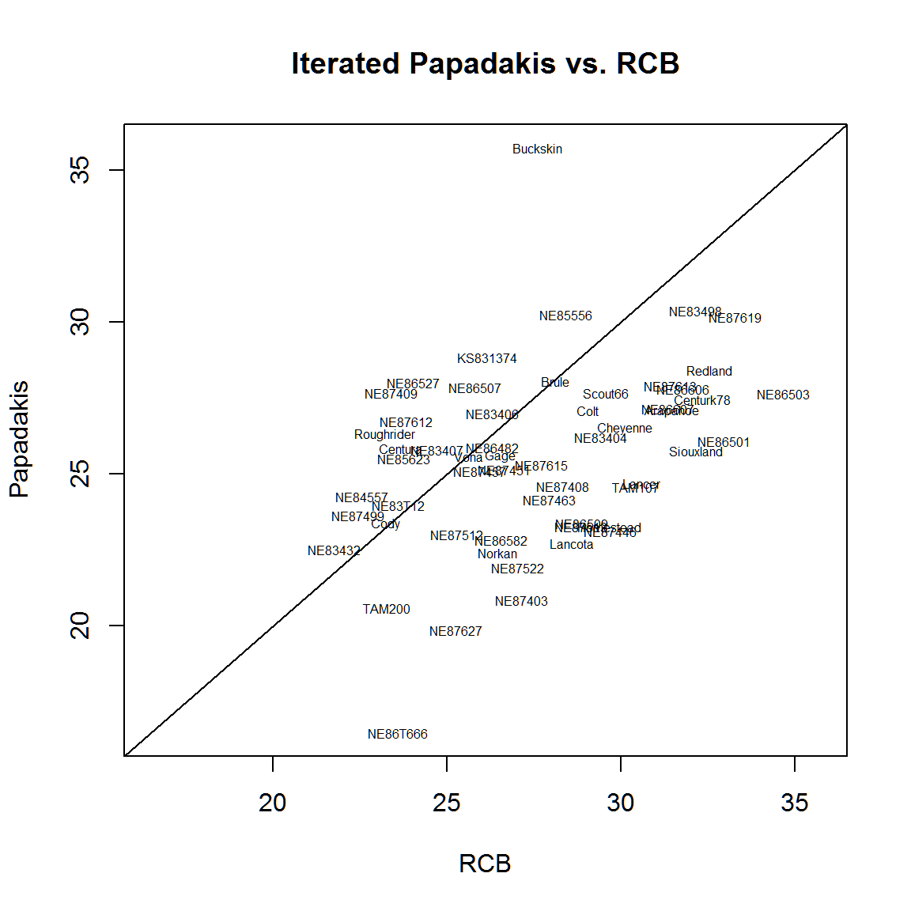

agridat_papadakis.RmdPapadakis (1937) believed that traditional blocking in field experiments did not adequately represent the patchiness of soil fertility patterns and he instead proposed adjusting the yield of each plot by the performance of the neighboring plots.
If there is heterogeneity in the field that is of a scale smaller than the block (but larger than the individual plots) then adjacent plots will be positively correlated and this information about the neighboring plots can be used to reduce the effect of spatial heterogeneity and increase the accuracy of the treatment effects.
The Papadakis method is a nearest neighbor method that uses a residual covariate in the analysis. In essence, the method follows the following steps.
Fit a treatment model and calculate the residuals from the model.
Calculate covariates that are the average of the neighboring residuals.
Fit a model with additional covariate terms for the residuals.
The left-right (LR) covariate for the (i,j)th plot is the average of the residuals for the plots immediately to the left and right of the (i,j)th plot. If one of these neighbors is missing, then the covariate is constructed from the single remaining neighboring residual. Border plots use only one neighboring residual. The up-down (UD) covariate is similarly constructed from residuals for plots immediately up or down from the (i,j)th plot.
papcov <- function(resid,x,y){
# Make sure x and y are numeric
if(is.factor(x)) x <- as.numeric(as.character(x))
if(is.factor(y)) y <- as.numeric(as.character(y))
xy <- paste(x,y,sep=":")
# Average neighboring residuals in up/down direction
xym1 <- paste(x,y-1,sep=":")
xyp1 <- paste(x,y+1,sep=":")
rm1 <- resid[match(xym1,xy,NA)]
rp1 <- resid[match(xyp1,xy,NA)]
ud <- (rm1+rp1)/2
# If only one neighboring residual is available, then just use it
ud <- ifelse(is.na(ud) & !is.na(rm1),rm1,ud)
ud <- ifelse(is.na(ud) & !is.na(rp1),rp1,ud)
# Average neighboring residuals in left/right direction
xm1y <- paste(x-1,y,sep=":")
xp1y <- paste(x+1,y,sep=":")
cm1 <- resid[match(xm1y,xy,NA)]
cp1 <- resid[match(xp1y,xy,NA)]
lr <- (cm1+cp1)/2
# If only one neighboring residual is available, then just use it
lr <- ifelse(is.na(lr) & !is.na(cm1),cm1,lr)
lr <- ifelse(is.na(lr) & !is.na(cp1),cp1,lr)
return(list(LR=lr, UD=ud))
}Hinz (1987) used the Papadakis technique to analzye a field experiment of tobacco.
library("agridat")
data(federer.tobacco)
dat <- federer.tobacco
dat <- transform(dat, height=height-600) # For simplicity
# Model 1 - RCB
m1 <- aov(height ~ factor(block) + factor(dose), dat)
anova(m1)## Analysis of Variance Table
##
## Response: height
## Df Sum Sq Mean Sq F value Pr(>F)
## factor(block) 7 388315 55474 1.8352 0.1056
## factor(dose) 6 273875 45646 1.5100 0.1985
## Residuals 42 1269586 30228# Model 2 - Row/Col as class variables
m2 <- aov(height ~ factor(block) + factor(dose) + factor(row), dat)
anova(m2)## Analysis of Variance Table
##
## Response: height
## Df Sum Sq Mean Sq F value Pr(>F)
## factor(block) 7 388315 55474 7.5455 1.355e-05 ***
## factor(dose) 6 273875 45646 6.2088 0.0001521 ***
## factor(row) 6 1004920 167487 22.7816 6.767e-11 ***
## Residuals 36 264666 7352
## ---
## Signif. codes: 0 '***' 0.001 '**' 0.01 '*' 0.05 '.' 0.1 ' ' 1# Model 3 - Two-step Papadakis
m3 <- aov(height ~ factor(dose), dat)
dat <- cbind(dat, papcov(m3$resid, dat$block, dat$row))
m4 <- aov(height ~ factor(dose) + LR + UD, data=dat)
anova(m4)## Analysis of Variance Table
##
## Response: height
## Df Sum Sq Mean Sq F value Pr(>F)
## factor(dose) 6 273875 45646 3.6857 0.004407 **
## LR 1 1061352 1061352 85.6998 3.636e-12 ***
## UD 1 14477 14477 1.1689 0.285136
## Residuals 47 582073 12385
## ---
## Signif. codes: 0 '***' 0.001 '**' 0.01 '*' 0.05 '.' 0.1 ' ' 1## [1] 12653.76Stroup, Baenziger, and Mulitze (1994) used the Papadakis tecnique in an iterative manner.
library("agridat")
data(stroup.nin)
dat2 <- stroup.nin
dat2 <- subset(dat2,!is.na(yield))
n.gen <- nlevels(dat2$gen)
# RCB model, ranks match Stroup Table 2, RCB Alliance
m5 <- lm(yield ~ gen -1 + rep, data=dat2)
pred.rcb <- coef(m5)[1:n.gen] # RCB adj means
rev(57-sort(rank(pred.rcb)))## genNE86503 genNE87619 genNE86501 genRedland genCenturk78 genNE83498
## 1 2 3 4 5 6
## genSiouxland genNE86606 genArapahoe genNE87613 genNE86607 genLancer
## 7 8 9 10 11 12
## genTAM107 genCheyenne genNE87446 genHomestead genScout66 genNE83404
## 13 14 15 16 17 18
## genColt genNE86509 genNE87513 genLancota genNE85556 genNE87408
## 19 20 21 22 23 24
## genBrule genNE87463 genNE87615 genBuckskin genNE87403 genNE87522
## 25 26 27 28 29 30
## genNE87451 genNE86582 genGage genNorkan genNE86482 genNE83406
## 31 32 33 34 35 36
## genKS831374 genNE87457 genNE86507 genVona genNE87512 genNE87627
## 37 38 39 40 41 42
## genNE83407 genNE86527 genNE87612 genNE85623 genCentura genNE83T12
## 43 44 45 46 47 48
## genNE86T666 genNE87409 genTAM200 genCody genRoughrider genNE84557
## 49 50 51 52 53 54
## genNE87499 genNE83432
## 55 56# Initial genotype model (no blocks)
m6 <- lm(yield ~ gen -1, data=dat2)
# Calculate Papadakis covariates
pp <- papcov(resid(m6), dat2$col, dat2$row)
dat2$LR <- pp$LR
dat2$UD <- pp$UD
# Single iteration of Papadakis model
m7 <- lm(yield ~ gen - 1 + LR + UD, data=dat2)
# Papadakis adjusted means
adjmn <- coef(m7)[1:n.gen]
# Residual = observed - adjusted mean
resid <- dat2$yield - adjmn[match(paste0("gen",dat2$gen),names(adjmn))]
# Now iterate Papadakis method to convergence
iter <- 0
notConv <- TRUE
while(notConv){
iter <- iter + 1
# Covariates based on residuals
pp <- papcov(resid, dat2$col, dat2$row)
dat2$LR <- pp$LR
dat2$UD <- pp$UD
m8 <- lm(yield ~ gen - 1 + LR + UD, data=dat2)
# Check convergence of adjusted means
prevmn <- adjmn
adjmn <- coef(m8)[1:n.gen]
tol <- sum((adjmn - prevmn)^2)
cat("Iteration: ",iter," tol: ",tol,"\n")
notConv <- tol > .001
resid <- dat2$yield - adjmn[match(paste0("gen",dat2$gen),names(adjmn))]
}## Iteration: 1 tol: 51.60518
## Iteration: 2 tol: 7.823055
## Iteration: 3 tol: 1.445812
## Iteration: 4 tol: 0.3619413
## Iteration: 5 tol: 0.09555693
## Iteration: 6 tol: 0.02840853
## Iteration: 7 tol: 0.008783593
## Iteration: 8 tol: 0.003297561
## Iteration: 9 tol: 0.001650757
## Iteration: 10 tol: 0.001157637
## Iteration: 11 tol: 0.001000046
## Iteration: 12 tol: 0.0009401906pred.pap <- adjmn
# Ranks almost match Stroup et al, Table 2, Alliance, RCB+NNA-PAP
all <- data.frame(rcb=57-rank(pred.rcb), nna=57-rank(pred.pap))
all[order(all$rcb),]## rcb nna
## genNE86503 1 14
## genNE87619 2 4
## genNE86501 3 24
## genRedland 4 6
## genCenturk78 5 15
## genNE83498 6 2
## genSiouxland 7 28
## genNE86606 8 11
## genArapahoe 9 18
## genNE87613 10 9
## genNE86607 11 16
## genLancer 12 35
## genTAM107 13 37
## genCheyenne 14 21
## genNE87446 15 46
## genHomestead 16 44
## genScout66 17 13
## genNE83404 18 23
## genColt 19 17
## genNE86509 20 42
## genNE87513 21 45
## genLancota 22 49
## genNE85556 23 3
## genNE87408 24 36
## genBrule 25 7
## genNE87463 26 39
## genNE87615 27 32
## genBuckskin 28 1
## genNE87403 29 53
## genNE87522 30 52
## genNE87451 31 33
## genNE86582 32 48
## genGage 33 29
## genNorkan 34 51
## genNE86482 35 25
## genNE83406 36 19
## genKS831374 37 5
## genNE87457 38 34
## genNE86507 39 10
## genVona 40 30
## genNE87512 41 47
## genNE87627 42 55
## genNE83407 43 27
## genNE86527 44 8
## genNE87612 45 20
## genNE85623 46 31
## genCentura 47 26
## genNE83T12 48 40
## genNE86T666 49 56
## genNE87409 50 12
## genTAM200 51 54
## genCody 52 43
## genRoughrider 53 22
## genNE84557 54 38
## genNE87499 55 41
## genNE83432 56 50# Visually compare the coefficients from the two methods
lims=range(c(pred.rcb,pred.pap))
plot(pred.rcb, pred.pap, xlim=lims, ylim=lims,
xlab="RCB",ylab="Papadakis",type='n')
text(pred.rcb,pred.pap, substring(names(pred.rcb),4),cex=0.5)
title("Iterated Papadakis vs. RCB")
abline(0,1) The variety ‘Buckskin’ has a large adjustment when using the Papadakis method. This makes sense, because Buckskin ended up in the high-yielding part of each of the four reps.
Hinz, Paul N. 1987. “Nearest-Neighbor Analysis in Practice.” Iowa State Journal of Research 62: 199–217.
Papadakis, J S. 1937. “Méthode Statistique Pour Les Expériences En Champ.” Bulletin Institute de L’Ameloration Des Plantes à Salonique 23.
Stroup, Walter, P Stephen Baenziger, and Dieter K Mulitze. 1994. “Removing Spatial Variation from Wheat Yield Trials: A Comparison of Methods.” Crop Science 86: 62–66.